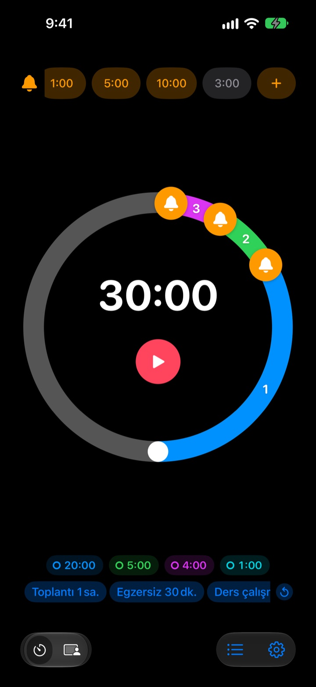
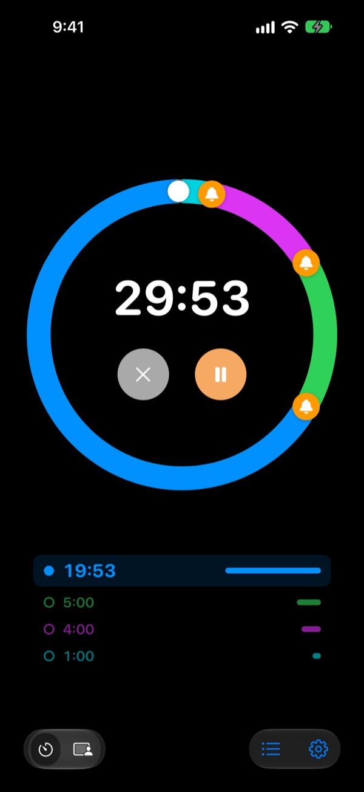
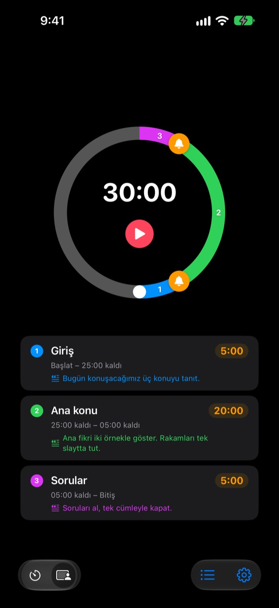
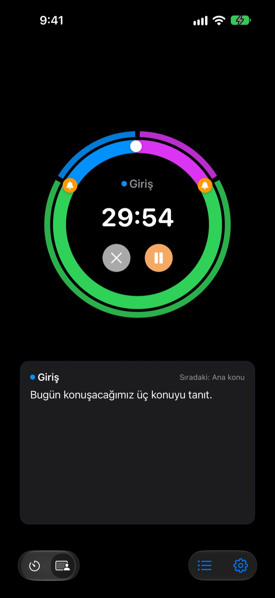

Bittikten sonra değil,
bitmeden önce
Sunumun bitmesine 5 dakika, toplantının kapanmasına 3 dakika kala. Rereminder seçtiğin her anda haber verir, sürekli saate bakmak zorunda kalmazsın.
Ön uyarılar ücretsiz ve sınırsız. iPhone, Apple Watch ve Mac için.

Burada dene
Bir süre ve ön uyarılarını seç, sonra kırmızı düğmeye bas. Bir dakika bir saniyede geçer ve her uyarı sırası gelince çalar.
Zamanlayıcı iş işten geçtikten sonra mı çaldı?
Sıradan bir zamanlayıcı ancak sıfırda çalar. Sunum sonuca gelmeden biter, ders özet yapılmadan kapanır, toplantı hiçbir karar alınmadan bir sonrakine sarkar. İhtiyacın olan sürenin bittiğini söyleyen bir ses değil, toparlamaya hâlâ vakit varken gelen bir uyarı.
Bitmeden önce, istediğin kadar uyarı
Kadrandaki zilleri bitişe 10, 5 ya da 1 dakika kalaya veya istediğin yere sürükle. Sınır yok ve her uyarıya “Slaytları toparla” gibi kendi mesajını ekleyebilirsin.
Ekran kapalıyken bile kalan süre Kilitli Ekran’da ve Dynamic Island’da görünür, Apple Watch da bileğine hafifçe dokunur.

Sunumunu bölümlere ayır
Giriş 5 dakika, ana kısım 20, sorular 5. Her bölüme bir ad ve metin ver. Bölüm her değiştiğinde onun adıyla uyarı gelir, zaman planın neredeyse kendiliğinden tutar. (Pro)

Şimdi söyleyeceğin, ekranda
Çalışırken o anki bölümün metni ve sıradaki bölüm büyük yazıyla görünür. Sıfırı geçersen saymaya devam eder, ne kadar aştığını tam olarak bilirsin. (Pro)

Üç adımda başla
- 1
Süreyi ayarla
Kadranı çevir ya da süreye dokunup yaz. Bir tur 60 dakika, iki tur 120 dakika.
- 2
Uyarıları yerleştir
Üstteki 1:00 veya 5:00 gibi bir etikete dokun ya da kadrana bir zil sürükle.
- 3
Başlat ve unut
iPhone’u kilitle. iPhone ve Apple Watch belirlediğin her anda haber verir.
En çok kullanılan ayarlar
- 20 dakikalık sunum
- 5 dk kala “Sonuca geç”, 1 dk kala “Teşekkür et”
- 40 dakikalık ders
- 10 dk kala “Ödevi anlat”, 3 dk kala “Özetle”
- 30 dakikalık toplantı
- 5 dk kala “Kararları netleştir”
- Pilates ya da yoga dersi
- Her seri için bir bölümle Oturum Modu (Pro)
- 25 dakikalık ders çalışma
- 5 dk kala, sonra mola
- Setler arası 3 dakika dinlenme
- 30 sn kala “Sonraki sete hazırlan”
- Bir saatlik mentorluk
- 15 ve 5 dk kala
Sık kullandığın ayarları şablon olarak kaydet, tek dokunuşla başlat (Hafıza ve üstü). Bir zamanlayıcıyı Kestirmeler ve Siri ile de başlatıp durdurabilirsin.
Ön uyarılar ücretsiz. Yalnızca hatırlamasını istersen öde.
Ücretsiz
- Sınırsız ön uyarı
- Her uyarıya kendi mesajın
- Kilitli Ekran’da ve Dynamic Island’da Canlı Etkinlik
- Yanıt verene kadar uyarmaya devam et ve tam alarmla bitir
- Apple Watch uygulaması ve Mac menü çubuğu
- Tüm tema renkleri
Hafıza · Pro
- Hafıza: ayarları şablon olarak kaydet, tek dokunuşla başlat
- Hafıza: uygulamayı yeniden aç, her şey bıraktığın gibi
- Pro: Hafıza’nın tamamı, ayrıca bölüm adları ve metinlerle Oturum Modu
- Pro: aşım süresi, geçmiş ve istatistikler
Her plan için yıllık abonelik ya da bir kerelik ömür boyu satın alma seçebilirsin. Oturum Modu, aşım süresi ve geçmişi ödemeden önce birkaç kez deneyebilirsin.
Reklam yok. Ayrıca tek bir Sonsuz Geçiş, Leeo’nun tüm uygulamalarını açar.
Sık sorulan sorular
Bir uyarı çalmadı.
Neredeyse her zaman izinler ya da odak modu yüzündendir. Uygulamada Ayarlar › Bildirim Yöntemi’nden bildirim iznini kontrol et. Odak kullanıyorsan iOS Ayarlar › Odak’ta Rereminder’ı izin verilen uygulamalara ekle. Sessiz modda yalnızca titreşim olur. Rereminder, Ayarlar › Bildirimler › Planlanmış Özet içindeyse uyarılar bekletilir, oradan çıkar.
Sessiz modda bittiğini fark eder miyim?
Evet. “Tam alarmla bitir”i açarsan sessiz modda ya da odak açıkken bile yüksek sesle çalar. “Yanıt verene kadar uyarmaya devam et” açıkken bildirimde Durdur ya da Ertele’ye dokunana kadar tekrarlar.
Apple Watch eşzamanlanmıyor.
Uygulamada Ayarlar › Aygıtlarım’ı aç, hangi adımın eksik olduğunu görürsün. Saat bu iPhone ile eşlenmiş olmalı, Rereminder saatte yüklü olmalı ve yükledikten sonra saatte bir kez açılmalı. Sonrasında saatteki uygulama kapalıyken bile zamanlayıcı saate geçer.
Mac’im bağlı değil görünüyor.
“Bağlı”, uygulamanın o Mac’te son 10 dakika içinde açık olduğu anlamına gelir; bu yüzden yeni uyanan bir Mac birkaç dakika sonra görünür. İki aygıt da iCloud Drive açık olarak aynı iCloud hesabını kullanmalı. Mac uygulaması macOS 26 veya sonrasını gerektirir.
Ödeme yaptım ama hiçbir şey açılmadı.
Planlar ekranında “Satın Alınanları Geri Yükle”ye dokun; ödeme yaptığın Apple Hesabı ile giriş yapmış olmalısın. Ömür boyu satın almalar, uygulamayı silsen ya da aygıt değiştirsen de geri gelir.
Kaydettiğim şablonlar kilitli.
Hâlâ oradalar. Hafıza ya da Pro olmadan kilitli olarak görünürler ve ikisinden birini aldığın anda yeniden açılırlar.
Nasıl para iadesi alırım?
İadeleri Apple yapar. Ödeme yaptığın Apple Hesabı ile reportaproblem.apple.com üzerinden talep et. Bir şey bozuksa bana da haber ver, bir sonraki kişi aynı sorunu yaşamasın.
Yüklemeden deneyebilir miyim?
iPhone’da m1zz.github.io/rereminder adresini aç, zamanlayıcı hemen App Clip olarak çalışır. Kadran ve uyarılar orada. Şablonlar, Oturum Modu ve saat uygulaması tam sürümde.
Hangi aygıtlarda çalışır?
iOS 26 veya sonrası yüklü iPhone, watchOS 11.6 veya sonrası yüklü Apple Watch ve macOS 26 veya sonrası yüklü Mac. iPad henüz desteklenmiyor. Uygulama 24 dilde kullanılabilir.
Verilerim nerede tutuluyor?
Zamanlayıcılar, şablonlar, bölüm adları, metinler ve geçmiş aygıtında kalır, uygulamayı silince onlar da silinir. Uygulama yalnızca iyileştirmeye yardım eden anonim kullanım istatistikleri gönderir. Tam olarak hangileri olduğu gizlilik politikasında yazıyor.
Soru ya da önerin mi var? leeo@kakao.com adresine yaz. Genellikle 2 ila 3 gün içinde yanıt veririm.